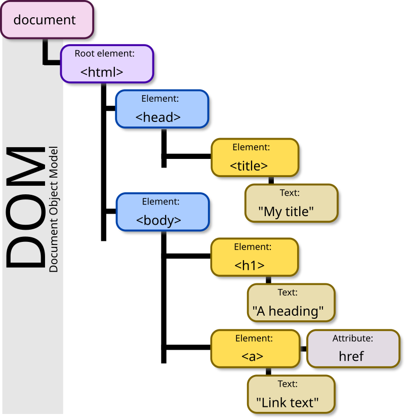

DOM¶
DOM en JavaScript¶

El DOM (Document Object Model) és una interfície de programació que permet als scripts actualitzar el contingut, l'estructura i l'estil d'un document mentre aquest s'està visualitzant al navegador.
Estructura del Document HTML¶
El DOM representa l'estructura d'un document HTML i l'entorn en el que s'executa com una jerarquia d'objectes. Els principals components són:
- Window: Representa la finestra del navegador i és l'objecte global en els scripts del navegador.
- Document: Representa el document HTML que es carrega a la finestra.
A més de window i document, hi ha diversos altres objectes principals accessibles a l'entorn d'una pàgina web, aquests es denominen Web APIs :
- Navigator: Proporciona informació sobre el navegador. -
navigator.userAgent-navigator.language-navigator.geolocation-navigator.getBattery() - Screen: Proporciona informació sobre la pantalla de l'usuari. -
screen.width-screen.height-screen.availWidth-screen.availHeight - History: Permet la manipulació de l'historial del navegador. -
history.back()-history.forward()-history.go() - Location: Proporciona la URL actual de la finestra. -
location.href-location.hostname-location.pathname-location.search-location.hash-location.reload() - Storage APIs: LocalStorage, sessionStorage, IndexedDB
- Network APIs: XMLHttpRequest, fetch
- Console: Proporciona accés a la consola de depuració del navegador.
- WebSocket: Proporciona una interfície per a les connexions WebSocket.
- Worker: Permet l'execució de scripts en segon pla.
DOM: Window¶
Window és un objecte predefinit en els navegadors web que representa la finestra en la qual es mostra el document. Alguns mètodes importants de window inclouen:
alert(),prompt(): Mètodes per mostrar diàlegs.setTimeout(funció, temps): Executa una funció després d'un temps especificat.setInterval(funció, temps): Executa una funció repetidament a intervals de temps especificats.clearTimeout(identificador): Cancel·la unsetTimeoutprogramat.
Aquests mètodes no solen invocar-se amb window.setTimeout(), per exemple, perquè són accessibles directament en estar en l'àmbit global. De fet, qualsevol funció o variable var declarada en l'àmbit global passa a ser un atribut de l'objecte window:
var globalVar = "I'm global!";
function globalFunction() { console.log("I'm a global function!");
}
console.log(window.globalVar); // "I'm global!"
window.globalFunction(); // "I'm a global function!"
Això no passa amb variables declarades amb let o const. L'especificació d'ECMAScript busca millorar la claredat i previsibilitat del codi. En evitar que let i const es converteixin en propietats de l'objecte window, es fomenta un disseny de codi més modular i amb menys
dependències globals.
Window no està disponible quan programem per
Nodeo altres intèrprets de servidor. Per aquesta raó, el Javascript dedicat al DOM hauria d'estar separat de funcions normals, de manera que aquestes es puguin reaprofitar si part de la lògica es mou al servidor.
DOM: Buscar Nodes¶
Per manipular elements del DOM, primer els hem de trobar. Els mètodes més comuns són:
document.getElementById(id): Troba un element pel seu ID.getElementsByTagName(tag): Troba tots els elements amb un nom d'etiqueta específic.getElementsByName(name): Troba tots els elements amb un nom especificat.querySelector(selector): Retorna el primer element que coincideix amb un selector CSS.querySelectorAll(selector): Retorna unNodelistde tots els elements que coincideixen amb un selector CSS.
let element = document.getElementById('exampleId');
let elements = document.getElementsByTagName('p');
let elementByName = document.getElementsByName('exampleName');
let firstElement = document.querySelector('.exampleClass');
let allElements = document.querySelectorAll('.exampleClass');
El resultat dels mètodes que troben més d'un node és un HTMLCollection o un NodeList . Si volem tractar-lo com un array cal convertir-lo amb Array.from() o [... HTMLCollection].
Sovint, necessitem accedir a un node específic a partir d'un ja existent al DOM. Per a això, podem utilitzar els següents mètodes aplicats a un element de l'arbre DOM:
element.parentElement:retorna l'element pare del node actual.element.children: retorna una col·lecció de tots els elements fills del node actual (només elements HTML, no inclou comentaris ni nodes de text).element.childNodes: retorna una col·lecció de tots els nodes fills, incloent comentaris i nodes de text, per la qual cosa no es fa servir freqüentment.element.firstElementChild: retorna el primer fill que és un element HTML.element.firstChild: retorna el primer node fill, incloent nodes de text o comentaris.element.lastElementChild: similar afirstElementChild, però retorna l'últim fill element HTML.element.lastChild: similar afirstChild, però retorna l'últim node fill.element.nextElementSibling:retorna el següent germà que és un element HTML.element.nextSibling: retorna el següent node germà, incloent nodes de text o comentaris.element.previousElementSibling: similar anextElementSibling, però retorna el germà anterior que és un element HTML.element.previousSibling: similar anextSibling, però retorna el germà anterior.element.hasChildNodes():indica si el node té nodes fills.element.childElementCount:retorna el nombre d'elements fills.element.closest(selector): retorna l'ancestre més proper que coincideix amb el selector donat. Per exemple, si l'element és un<td>dins d'una taula,element.closest('table')retornarà la taula a la qual pertany.
El DOM proporciona accessos directes (dreceres) per obtenir elements comuns:
document.documentElement: obté el node de l'element<html>.document.head: obté el node de l'element<head>.document.body: obté el node de l'element<body>.document.title: obté el node de l'element<title>.document.links: obté una col·lecció de tots els hipervincles del document.document.anchors: obté una col·lecció de totes les àncores del document.document.forms: obté una col·lecció de tots els formularis del document.document.images: obté una col·lecció de totes les imatges del document.document.scripts: obté una col·lecció de tots els scripts del document.
No hi ha una manera millor que d'altres en totes les ocasions de trobar els nodes. Si no volem fallar es pot fer servir
querySelectori usar selectors de CSS. D'aquesta manera, canviar el selector és canviar la "query". No obstant això, els altres selectors més primitius pot que siguin més ràpids en certes ocasions.
DOM: Modificar Nodes¶
Un cop hem trobat els nodes, podem modificar-los. Alguns mètodes útils inclouen:
.innerHTML,.innerText,.outerHTML: Per canviar el contingut HTML o text d'un element..insertAdjacentHTML(position, text): Insereix text HTML en una posició específica. https://lenguajejs.com/dom/crear/insertadjacent-api/.append(content, element),.prepend(content, element): Afegeix contingut al principi o al final d'un element..after(),.before(): Insereix un element abans o després de l'element actual..cloneNode(deep): Clona un node, amb o sense els seus fills..remove(): Elimina un node.
Mètodes més antics però encara en ús inclouen removeChild() i appendChild().
let element = document.getElementById('exampleId');
element.innerHTML = 'Nou contingut';
element.insertAdjacentHTML('beforeend', '<p>Més contingut</p>');
element.append('Text addicional');
element.remove();
Atributs¶
Els elements solen tenir atributs. Alguns són especials com el id o la class. El idestà accessible directament com a atribut de l'element, així com el className, tot i que després veurem que és millor manipular-lo d'una altra manera. Altres atributs com value en els Inputo scr en els <img> també poden ser llegits i modificats com a propietats. Es tracta dels atributs estàndard.
Per als atributs que no tenen accés directe perquè no són estàndard, podem fer servir setAttribute() getAttribute(), hasAttribute() o removeAttribute():
const button = document.querySelector("button");
button.setAttribute("name", "helloButton");
button.setAttribute("disabled", "");
Propietats¶
Atès que els elements HTML en ser analitzats i convertits al DOM es converteixen en objectes, aquests són manipulables com qualsevol objecte, podent afegir o modificar propietats, fins i tot aquelles que venen en l'HTML com a atributs estàndard.
Atributs com a
idse sincronitzen perfectament amb la propietat. Altres comvalueno se sincronitzen directament: https://es.javascript.info/dom-attributes-and-properties#sincronizacion-de-propiedad-y-atributoHi ha uns atributs que se sincronitzen de forma especial amb les propietats. Són els que comencen per
data-, que es guarden en un objecte.datasetde l'element en el DOM. Això ho expliquem a la secció de Atributs de dades.
DOM: Estils¶
Per manipular els estils d'un element, podem usar propietats de estil i classes CSS.
.style.property: Modifica un estil CSS directament..className: Canvia el nom de la classe de l'element..classList.add(),.classList.toggle(),.classList.remove(),.classList.replace(): Mètodes per manipular classes CSS de manera més dinàmica.
let element = document.getElementById('exampleId');
element.style.color = 'blue';
element.classList.add('new-class');
element.classList.remove('old-class');
ClassName no s'hauria de fer servir, ja que pot molestar si es fa servir classList d'altra banda. Usarem classList en totes les ocasions excepte per a eliminar totes les classes.
Creació d'elements (plantilles)¶
Se pueden crear elementos totalmente de forma programática. Pero puede
ser tedioso. Muchas veces, si sabemos que hay fragmentos de HTML
bastante estáticos, podemos usar innerHTML y .append() con
plantillas creadas mediante strings.
Para crear elementos del DOM mediante plantillas hay muchas formas. Obviaremos las más farragosas y nos centraremos en aquellas que son más rápidas.
Creación de Elementos: Template Literal¶
Els template literals i les interpolacions de cadenes permeten crear contingut dinàmic de manera senzilla.
function generateGraphCard(graph) {
let cardTemplate = document.createElement('div');
cardTemplate.classList.add('col');
cardTemplate.innerHTML = `
<div class="card">
<div class="card-header">${graph.title}</div>
<div class="card-body">
<div class="graph"></div>
<p class="card-text">${graph.description}</p>
<a href="#/graph/${graph.id}" class="btn btn-primary">Full screen</a>
</div>
</div>`;
let graphContainer = cardTemplate.querySelector('.graph');
graphContainer.append(graph.Data ? generateBarGraph(graph.Data) : graphPlaceholder());
return cardTemplate;
}
Creació d'elements mitjançant Tagged Template Literals¶
Els "Tagged Template Literals" són una característica de JavaScript que et permet crear funcions que accepten una plantilla literal i les seves interpolacions. Aquestes funcions són invocades de forma molt diferent, ja que no tenen (parentesi) i s'entén que el primer argument és la plantilla i la resta d'arguments són els diferents valors de les variables interpolades.
En lloc de rebre una sola cadena de text amb les interpolacions ${}, la funció d'etiqueta rep dos arguments separats: un array de strings i un arrelament amb els valors interpolats.
(()=>{
function miTaggedTemplateLiteral(strings, ...values) { return console.log(strings, ...values);
}
let nombre = "Carlos";
let edad = 32;
miTaggedTemplateLiteral`Hola soy ${nombre} y tengo ${edad} años`;
})();
[ "Hola sóc ", " i tinc ", " anys" ] Carles 32
En el següent exemple, extret de https://exploringjs.com/es6/ch_template-literals.html#sec_html-tag-function-implementation es pot veure com fer una funció per a tagged temperate literal que personalitzi una plantilla.
function htmlEscape(str) {
return str.replace(/&/g, '&') // first!
.replace(/>/g, '>')
.replace(/</g, '<')
.replace(/"/g, '"')
.replace(/'/g, ''')
.replace(/`/g, '`');
}
function html(templateObject, ...substs) {
// Use raw template strings: we don’t want
// backslashes (\n etc.) to be interpreted
const raw = templateObject.raw;
let result = '';
substs.forEach((subst, i) => {
// Retrieve the template string preceding
// the current substitution
let lit = raw[i];
// In the example, map() returns an Array:
// If `subst` is an Array (and not a string),
// we turn it into a string
if (Array.isArray(subst)) {
subst = subst.join('');
}
// If the substitution is preceded by an exclamation
// mark, we escape special characters in it
if (lit.endsWith('!')) {
subst = htmlEscape(subst);
lit = lit.slice(0, -1);
}
result += lit;
result += subst;
});
// Take care of last template string
result += raw[raw.length-1]; // (A)
return result;
}
const tmpl = addrs => html`
<table>
${addrs.map(addr => html`
<tr><td>!${addr.first}</td></tr>
<tr><td>!${addr.last}</td></tr>
`)}
</table>
`;
const data = [
{ first: '<Jane>', last: 'Bond' },
{ first: 'Lars', last: '<Croft>' },
];
console.log(tmpl(data));
<table>
<tr><td><Jane></td></tr>
<tr><td>Bond</td></tr>
<tr><td>Lars</td></tr>
<tr><td><Croft></td></tr>
</table>
Aquest seria el resultat:
| <Jane> |
| Bond |
| Lars |
| <Croft> |
Creació d'Elements: Interpolacions, Wrapper, fragments¶
Podem fer servir funcions per extreure i implementar interpolacions en template literals.
function extractInterpolations(template) {
let regex = /\{\{([^\{\}]*)\}\}/g;
return [...template.matchAll(regex)];
}
function applyInterpolations(template, data) {
return extractInterpolations(template).reduce((T, [I, att]) =>
T = T.replace(I, data[att]), template);
}
function wrapElement(innerHTML) {
let wrapper = document.createElement('div');
wrapper.innerHTML = innerHTML;
return wrapper.firstElementChild;
}
function renderNews(news) {
let newsTemplate = `
<article id="article_{{id}}">
<a href="{{link}}"><h2>{{headline}}</h2></a>
<time>{{date}}</time><address>{{authors}}</address>
<p>{{short_description}}</p>
<p>{{category}}</p>
</article>`;
return wrapElement(applyInterpolations(newsTemplate, news));
}
Aquest exemple és una mica més complicat del que s'espera poder fer a aquestes alçades. No obstant això, és interessant intentar entendre el seu funcionament. S'hi fan servir {{}} com a interpolacions com a Angular. Aquesta pot ser una base per fer un motor de plantilles com tenen els frameworks. D'altra banda, es crea un div que actua de Wrapper, és a dir, que envolta el veritable element per poder treballar només amb strings fins al final, però retornar un Element,
gràcies a innerHTML.
Com a millora a l'exemple anterior, el Wrapper pot ser un fragment. Aquest té millor rendiment, no només permet treure el primer element fill, per la qual cosa no necessitem un divan que els contingui i no genera un node addicional. És molt eficient inserint múltiples nodes, per inserir en bucle.
function renderComments(comments) {
const fragment = document.createDocumentFragment();
comments.forEach(comment => {
const commentElement = document.createElement('div');
commentElement.className = 'comment';
commentElement.innerHTML = `
<h4>${comment.author}</h4>
<p>${comment.text}</p>
<time>${comment.date}</time>
`;
fragment.appendChild(commentElement); // Afegir cada comentari al fragment, no al DOM
});
return fragment;
}
// Dades d'exemple
const comments = [
{ author: "Aina", text: "Bon article!", date: "2024-11-11" },
{ author: "Lluis", text: "Gràcies per la informació.", date: "2024-11-10" },
{ author: "Marta", text: "M'ha resultat molt útil.", date: "2024-11-09" }
];
// Crida a la funció per renderitzar els comentaris
document.getElementById('comments-section').appendChild(renderComments(comments));
// Inserir tots els comentaris alhora;
Creació d'elements amb<template>¶
L'etiqueta <template> és especial. El seu interior no es renderitza com la resta, però queda accessible per ser buscat. La utilitat és crear plantilles en HTML que puguin ser clonades i emplenades com es desitja.
Vegem aquest HTML extret del web de referència:
https://developer.mozilla.org/en-US/docs/Web/HTML/Element/template:
<table id="producttable">
<thead>
<tr>
<td>UPC_Code</td>
<td>Product_Name</td>
</tr>
</thead>
<tbody>
<!-- dades opcionals es poden incloure aquí opcionalment -->
</tbody>
</table>
<template id="productrow">
<tr>
<td class="record"></td>
<td></td>
</tr>
</template>
I amb aquest javascript obtenim el contingut del temperat, es clona i s'omple les vegades que sigui necessari:
// Test to see if the browser supports the HTML template element by checking
// for the presence of the template element's content attribute.
if ("content" in document.createElement("template")) {
// Instantiate the table with the existing HTML tbody
// and the row with the template
const tbody = document.querySelector("tbody");
const template = document.querySelector("#productrow");
// Clone the new row and insert it into the table
const clone = template.content.cloneNode(true);
let td = clone.querySelectorAll("td");
td[0].textContent = "1235646565";
td[1].textContent = "Stuff";
tbody.appendChild(clone);
// Clone the new row and insert it into the table
const clone2 = template.content.cloneNode(true);
td = clone2.querySelectorAll("td");
td[0].textContent = "0384928528";
td[1].textContent = "Acme Kidney Beans 2";
tbody.appendChild(clone2);
} else {
// Find another way to add the rows to the table because
// the HTML template element is not supported.
}
Qualsevol de les formes que hem vist per crear elements, mitjançant template literal o funcions tagged, creant les nostres interpolacions o amb templates és vàlida i combinable. Per aconseguir el que els frameworks fan amb els seus motors de plantilla hi ha molt de camí per fer, perquè no s'ha parlat del
shadow DOMi altres tècniques avançades com elscustom elementsper aconseguir plantilles amb reactivitat. Si aconsegueixes fer un motor de plantilles suficientment genèric per a l'aplicació en la qual estem treballant, l'ús de frameworks queda molt menys justificat.
Esperar a que es carregui el DOM¶
Podem assegurar-nos que el DOM estigui completament carregat abans d'executar el nostre script utilitzant DOMContentLoaded.
(function () {
"use strict";
document.addEventListener("DOMContentLoaded", function () {
for (let i = 0; i < 100; i++) {
let container = document.getElementById("content");
let number = document.createElement("p");
number.innerHTML = i;
container.appendChild(number);
}
});
})();
També podem col·locar el nostre script al final del cos (body)del document HTML.
Si, a més, hi afegim l'atribut defer a un script, aquest es descarregarà de manera asíncrona i s'executarà quan l'HTML hagi estat totalment interpretat i just abans que DOMContentLoaded.
Si cal esperar que carregui també tot el CSS, és a dir el CSSOM, podem recórrer a l'esdeveniment load, que espera a carregar i interpretar tot el CSS. Però si no és necessari, és millor esperar només al DOM. Això és perquè hi ha recursos molt pesants com imatges o vídeos que pot fins i tot que no arribin a carregar.
En general, recomanarem fer servir
DOMContentLoadeden comptes de posar el script al final oloadperquè en ser executat al principi, ja hi ha coses que es pot anar executant sense necessitat de DOM abans que carregui totalment. En qualsevol cas, els script en Mòduls sempre s'executen en modedefer.
Atributs de Dades¶
HTML5 permet agregar atributs personalitzats no visuals a les etiquetes utilitzant data-*. Aquests atributs poden ser accessibles a través de JavaScript fent servir dataset.
<article
id="electriccars"
data-columns="3"
data-index-number="12314"
data-parent="cars">
...
</article>
let article = document.getElementById('electriccars');
console.log(article.dataset.columns); // 3
console.log(article.dataset.indexNumber); // 12314
Formularis a JavaScript¶
En una aplicació web, la validació dels formularis es realitza tant en el costat del client com en el del servidor.
De fet, l'única validació estrictament necessària s'ha de fer en el servidor per evitar peticions il·legals per clients com postman o curl.
Però es pot fer servir Javascript per a molt més que validar formularis. Per exemple, ens pot ajudar a autocompletar camps, descarregar dades en segon pla o tractar amb imatges o dades complexes abans d'enviar al servidor.
Atributs de Formularis¶
El contingut dels camps d'entrada en un formulari es pot visualitzar i modificar utilitzant l'atribut value. Altres elements del formulari, com els botons d'opció (ràdio button) i les caselles de verificació (checkbox), han de tenir un name comú i també utilitzen els atributs value i checked. Per als elements select, s'utilitzen els atributs options i selectedIndex.
Observa l'exemple a continuació, que fa servir la manera (obsoleta) d'associar esdeveniments onclick per executar una funció que informi dels valors dels inputs del formulari:
<!DOCTYPE html>
<html lang="ca">
<head>
<meta charset="UTF-8">
<meta name="viewport" content="width=device-width, initial-scale=1.0">
<title>Formulari d'Exemple</title>
</head>
<body>
<form id="exampleForm">
<label for="textInput">Text:</label>
<input type="text" id="textInput" value="Text inicial"><br><br>
<label>Opcions:</label>
<input type="radio" name="options" value="opcio1" checked> Opció 1
<input type="radio" name="options" value="opcio2"> Opció 2<br><br>
<label for="checkboxInput">Casella:</label>
<input type="checkbox" id="checkboxInput" checked><br><br>
<label for="selectInput">Selecciona:</label>
<select id="selectInput">
<option value="1">Opció 1</option>
<option value="2" selected>Opció 2</option>
<option value="3">Opció 3</option>
</select><br><br>
<button type="button" onclick="manipulateValues()">Veure i Manipular Valors</button>
</form>
<script src="script.js"></script>
</body>
</html>
function manipulateValues() {
// Obtenir el valor del camp de text
let textInput = document.getElementById('textInput');
console.log('Valor del camp de text:', textInput.value);
textInput.value = 'Nou text';
// Obtenir el valor del radi button seleccionat
let selectedOption = document.querySelector('input[name="options"]:checked');
console.log('Valor del radi button seleccionat:', selectedOption.value);
// Canviar la selecció del ràdio button
document.querySelector('input[name="options"][value="opcio2"]').checked = true;
// Obtenir el valor del checkbox
let checkboxInput = document.getElementById('checkboxInput');
console.log('Checkbox està marcat:', checkboxInput.checked);
// Canviar l'estat del checkbox
checkboxInput.checked = !checkboxInput.checked;
// Obtenir el valor del select
let selectInput = document.getElementById('selectInput');
console.log('Valor del select:', selectInput.value);
// Canviar la selecció del select
selectInput.value = '3';
}
Cicle Tradicional del Formulari¶
Tradicionalment, un formulari està dissenyat per enviar dades mitjançant HTTP al servidor. En enviar (submit) un formulari, el navegador empaqueta les dades i les envia utilitzant el mètode HTTP especificat (com GET o POST). Els formularis poden incloure validació interna mitjançant HTML, cosa que és més ràpida que JavaScript però ofereix menys control i personalització. La validació interna d'HTML genera pseudo-classes que poden estilitzar-se amb CSS.
<!DOCTYPE html>
<html lang="ca">
<head>
<meta charset="UTF-8">
<meta name="viewport" content="width=device-width, initial-scale=1.0">
<title>Formulari amb Validació</title>
<link rel="stylesheet" href="styles.css">
</head>
<body>
<form id="validationForm">
<label for="name">Nom:</label>
<input type="text" id="name" name="name" required><br><br>
<label for="email">Correu Electrònic:</label>
<input type="email" id="email" name="email" required><br><br>
<label for="password">Contrasenya:</label>
<input type="password" id="password" name="password" required minlength="6"><br><br>
<button type="submit">Enviar</button>
</form>
<script src="script.js"></script>
</body>
</html>
/* Estils bàsics */
form {
width: 300px;
margin: 0 auto;
}
label {
display: block;
margin-bottom: 5px;
}
input {
width: 100%;
padding: 8px;
margin-bottom: 10px;
border: 1px solid #ccc;
border-radius: 4px;
box-sizing: border-box;
}
/* Pseudo-classes per a la validació */
input:required {
border-left: 5px solid #0000FF; /* Vora blava per a camps requerits */
}
input:valid {
border-left: 5px solid #00FF00; /* Vora verda per a camps vàlids */
}
input:invalid {
border-left: 5px solid #FF0000; /* Vora vermell per a camps invàlids */
}
/* Pseudo-classe per a camp enfocat */
input:focus {
outline: none;
border-color: #66AFE9;
box-shadow: 0 0 8px rgba(102, 175, 233, 0.6);
}
document.getElementById('validationForm').addEventListener('submit', function(event) {
event.preventDefault(); // Evita l'enviament del formulari per a la demostració
alert('Formulari enviat correctament (validació exitosa)');
});
Aquest exemple demostra com utilitzar pseudo-classes CSS per estilitzar formularis amb validació interna en HTML.
Cicle del Formulari amb JavaScript¶
Podem interceptar i aturar el cicle per defecte d'un formulari per validar-lo i enviar-lo utilitzant JavaScript. D'aquesta manera, podem evitar tenir un botó submit i controlar completament el procés d'enviament. Si el formulari envia dades al servidor i es refresca, JavaScript perd el control del programa. Per evitar això, podem utilitzar preventDefault() dins de l'esdeveniment submit o retornar false.
Exemple d'Interceptar Submit amb JavaScript¶
Podem manejar esdeveniments de formularis per personalitzar el seu comportament. Un exemple comú és l'ús de l'esdeveniment onsubmit per executar una funció de validació abans d'enviar el formulari. Si la funció de validació retorna true, el formulari s'envia; altrament, es cancel·la l'enviament.
<form id="formulario" onsubmit="return validar();">
<input type="text" id="phone-number" required>
<button type="submit">Enviar</button>
</form>
<script>
function validar() {
var phoneNumber = document.getElementById('phone-number').value;
var phoneRGEX = /^[(]{0,1}[0-9]{3}[)]{0,1}[-\s\.]{0,1}[0-9]{3}[-\s\.]{0,1}[0-9]{4}$/;
var phoneResult = phoneRGEX.test(phoneNumber);
alert("phone: " + phoneResult);
return phoneResult; // Retorna true si és vàlid, altrament false
}
</script>
Enviar Formulari per JavaScript¶
Podem enviar un formulari mitjançant JavaScript utilitzant el mètode submit(). Això és útil quan volem enviar el formulari després de realitzar alguna operació addicional o validació personalitzada.
Exemple d'Enviament per JavaScript¶
<button onclick="enviarFormulari()">Enviar</button>
<script>
function enviarFormulari() {
let formulari = document.getElementById("formulari");
formulari.submit();
}
</script>
Però si no ens val amb enviar el formulari amb submit() i volem manipular les seves dades abans d'enviar o enviar una API per POST manualment, obtindrem el contingut input per input o amb FormData:
div.querySelector("#buttonSubmit").addEventListener('click', async (event) => {
event.preventDefault();
const newProfile = Object.fromEntries(new FormData(div.querySelector('form')).entries());
updateCurrentProfile(newProfile); // Li passem un objecte. Tot i que en una petició POST tradicional podem enviar un FormData directament amb fetch
});
Mirar el capítol de comunicació amb el servidor per a més informació i exemples amb 'FormData
Documentació encara en procés